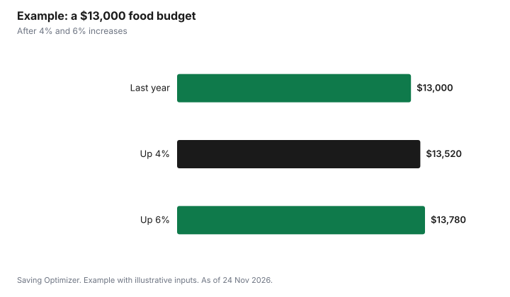

Food & Groceries · Canada
How to Use Canada’s Food Price Reports Without Panic-Budgeting

Use the Food Price Report's percentage, not its headline dollar figure. The 2026 report forecast food prices rising 4% to 6% and a family of four spending $17,571.79. Your household isn't the average, so apply 4% to 6% to what you actually spent last year, then cut where prices are rising fastest, like meat.
Key takeaways
- 2026 forecast: food prices up 4% to 6% (Canada's Food Price Report, checked 24 Nov 2026).
- Average family of four: $17,571.79 on food in 2026, up to $994.63 more.
- Food prices were 27% higher than five years earlier.
- Meat, especially beef, is the biggest pressure.
- Example: a $13,000 food budget becomes $13,520 to $13,780.
What the report says
| Measure | Forecast |
|---|---|
| Overall food prices in 2026 | Up 4% to 6% |
| Family of four, yearly food spending | $17,571.79 |
| Increase from 2025 | Up to $994.63 |
| Prices vs five years earlier | 27% higher |
| Above-average provinces | AB, NB, NS, ON, QC |
Turn it into your budget
- Add up last year's grocery and restaurant spending from your bank or card statements.
- Multiply by 1.04 and 1.06 for a low and a high estimate.
- Set the weekly budget near the low estimate, and watch it monthly.
- Shift spending where prices rise fastest: swap some beef for chicken, eggs, beans or lentils.
- Recheck when the next report comes out.

Plan: an example
Example: a couple spent $13,000 on food last year. At 4% that's $13,520 this year; at 6%, $13,780. That's $40 to $60 more a month, which one meatless dinner a week or a switch to store brands can cover.
See family grocery budgeting and the $300-a-month grocery budget.
Sources
- Dalhousie University Agri-Food Analytics Lab, Canada's Food Price Report 2026 (4 Dec 2025), checked 24 Nov 2026.
- Arrell Food Institute, 2026 Canada's Food Price Report, checked 24 Nov 2026.
Frequently asked questions
What is Canada's Food Price Report?
A yearly forecast of food prices from Dalhousie University and partner universities.
How much will food prices rise in 2026?
The 2026 report forecast an increase of 4% to 6%.
How much does a family of four spend on food in Canada?
The 2026 report forecast $17,571.79 for the average family of four.
Should I use the family of four number as my budget?
No. Apply the forecast percentage to your own spending instead.
Which foods are rising fastest?
The 2026 report named meat, especially beef, as the biggest pressure.
Researched and drafted with AI assistance and fact-checked against official Canadian sources. How we create content.
Note: Forecasts are not guarantees. Budget figures are examples. Education only.